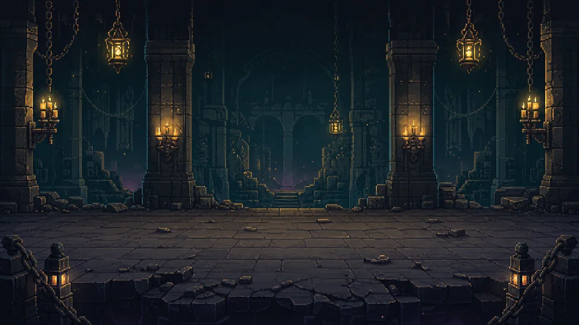
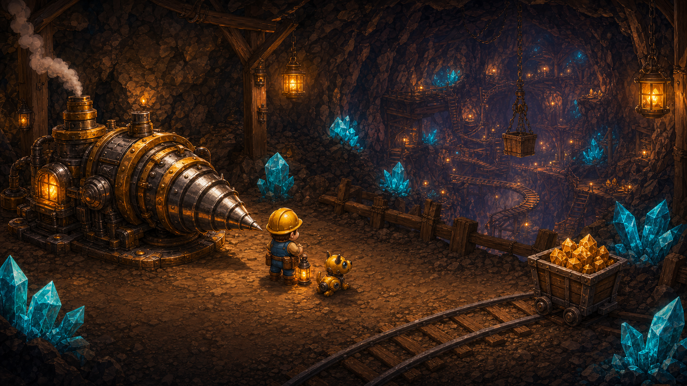
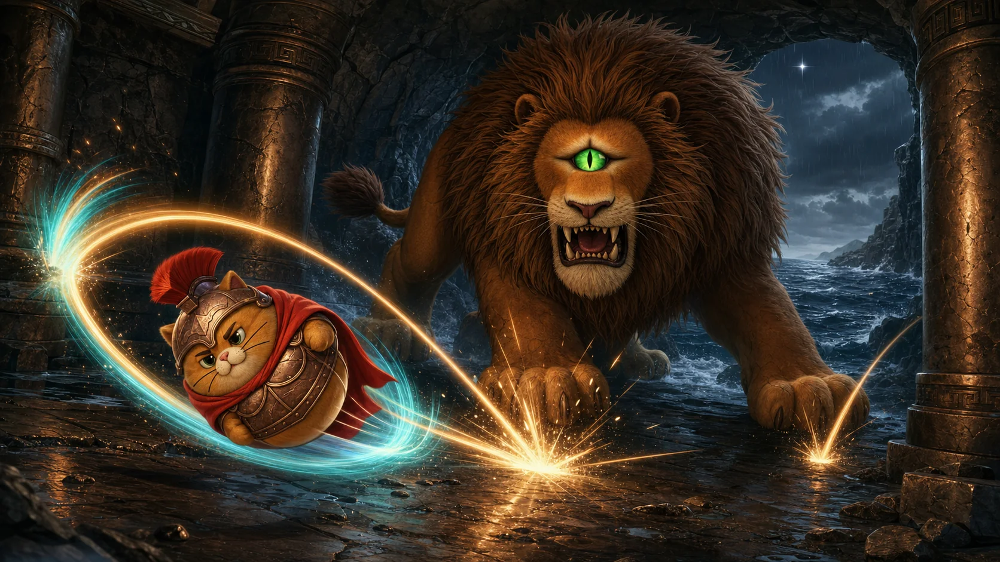

크게 보기 ↗개발자 공식파일 확인됨
MeowthologySaga 제작
심연의 무명소환사
자동 전투로 심연을 내려가며 동료와 장비를 소환하고, 환생으로 더 강해지는 다크 판타지 방치형 RPG입니다.
- 버전
- 0.1.2
- 용량
- 57.0 MiB
- 형식
- .lemgame
공식 GitHub Release의 정확한 파일 다운로드가 시작됩니다.
Language Miner contents
코드를 몰라도 괜찮습니다. 마음에 드는 콘텐츠를 고르고 다운로드한 뒤 Language Miner에서 열면 됩니다. 지금은 개발자 공식 PlayZone 게임 3종을 바로 받을 수 있으며, 검토를 마친 사용자 게임과 캐릭터 카드도 이곳에 추가됩니다.
둘러보기와 다운로드에는 회원가입이 필요 없습니다. 공유할 때만 GitHub 계정이 필요하며 Language Miner 전용 계정은 없습니다.
이름이나 장르로 찾고, 다운로드 버튼을 누르면 정확한 버전의 LEM 게임팩을 바로 받습니다.
3개 콘텐츠

크게 보기 ↗MeowthologySaga 제작
자동 전투로 심연을 내려가며 동료와 장비를 소환하고, 환생으로 더 강해지는 다크 판타지 방치형 RPG입니다.
공식 GitHub Release의 정확한 파일 다운로드가 시작됩니다.

크게 보기 ↗MeowthologySaga 제작
낮에는 광물을 캐고 방벽과 장치를 세우며, 밤에는 몰려오는 적에게서 중앙 시추기를 지키는 액션 디펜스입니다.
공식 GitHub Release의 정확한 파일 다운로드가 시작됩니다.

크게 보기 ↗MeowthologySaga 제작
고양이 영웅을 당겨 쏘고 벽과 괴수 부위를 연쇄 반사해 공략하는 2D 리코셰 액션 RPG입니다.
컷신 음성과 파생 영상은 비상업 배포 전용입니다.
공식 GitHub Release의 정확한 파일 다운로드가 시작됩니다.
압축을 풀거나 폴더를 찾을 필요가 없습니다. 게임은 .lemgame, 캐릭터 카드는 .json 파일 그대로 가져옵니다.
.lemgame 바로 받기를 누릅니다.
앱에서 플레이존을 엽니다.
LEM 파일 추가를 눌러 받은 파일을 고릅니다.
보안 리포트를 보고 확인하고 설치합니다.
카탈로그에서 캐릭터 JSON을 받습니다.
말하고 쓰기 · Output → 캐릭터챗으로 갑니다.
JSON 가져오기로 파일을 고릅니다.
출처를 보고 검토하고 가져오기를 누릅니다.
더 쉬운 방법: 공식 3종은 앱의 PlayZone에서 설치하고 플레이를 눌러도 같은 고정 릴리스를 내려받고 검사합니다.
제출 접수와 일반 사용자가 보는 카탈로그 사이에 검토 단계를 두고, 사이트 자체의 로그인·업로드 서버는 만들지 않았습니다.
GitHub가 계정, 신고와 차단을 관리합니다.
24시간 3개 초과 또는 같은 배포 링크 반복은 자동으로 닫고 잠급니다.
제출 글은 공개지만 검토 전에는 카탈로그에 등록하지 않습니다.
승인 뒤 링크나 내용을 바꾸면 승인 표시를 제거합니다.
도배 검사는 사용자의 파일을 다운로드하거나 실행하지 않습니다.
업로드·DB·공용 API 키가 없어 공격 표면과 서버 비용을 줄입니다.